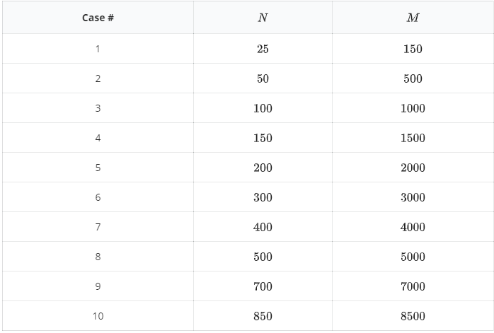

学过图论的同学都知道最小割的概念：对于一个图，某个对图中结点的划分将图中所有结点分成两个部分，如果结点 $s, t$ 不在同一个部分中，则称这个划分是关于 $s, t$ 的割。对于带权图来说，将所有顶点处在不同部分的边的权值相加所得到的值定义为这个割的容量，而 $s, t$ 的最小割指的是在关于 $s, t$ 的割中容量最小的割。
而对冲刺 NOI 竞赛的选手而言，求带权图中两点的最小割已经不是什么难事了。我们可以把视野放宽，考虑有 $N$ 个点的无向连通图中所有点对的最小割的容量，共能得到 $\frac {N(N−1)} {2}$ 个数值。这些数值中互不相同的有多少个呢？这似乎是个有趣的问题。
输入第一行包含两个数 $N, M$，表示点数和边数。
接下来 $M$ 行，每行三个数 $u, v, w$，表示点 $u$ 和点 $v$（从 $1$ 开始标号）之间有一条权值是 $w$ 的边。
输出第一行为一个整数，表示不同的最小割容量的个数。
4 4 1 2 3 1 3 6 2 4 5 3 4 4
3

对于所有测试点，$w \leq 100000$。
 Comet OJ
Comet OJ